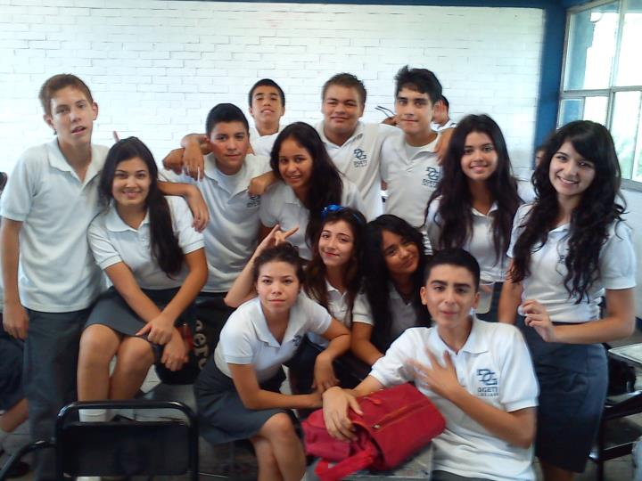
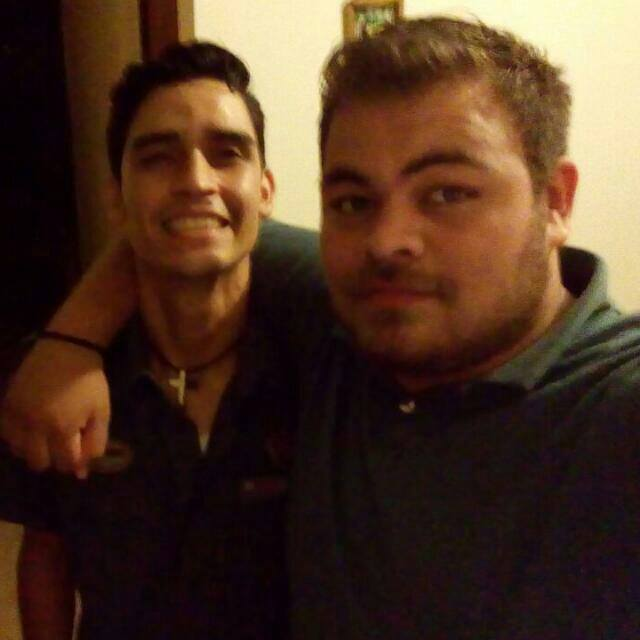
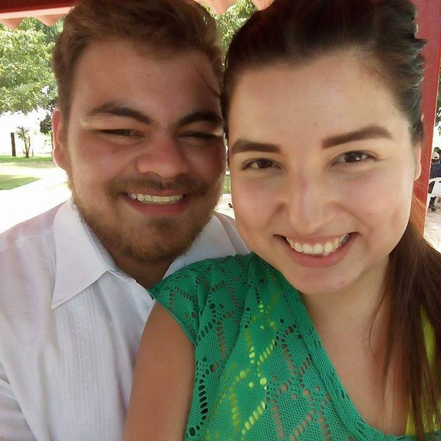
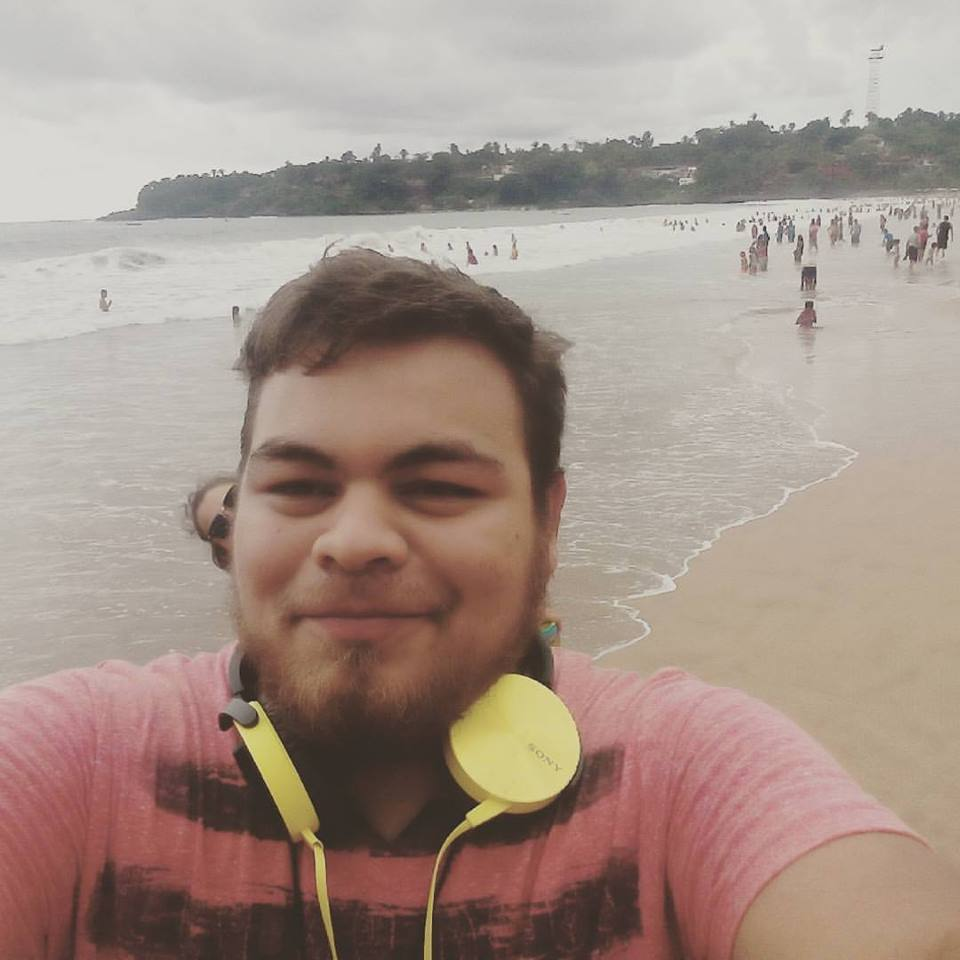

Bueno comenzare a relatar mi actualidad desde el momento en que fui aceptado en la universidad en la carrera de ingeniería en informática, tenia dos opciones irme a estudiar a Culiacan o quedarme en el Tecnológico de los Mochis, mas opte por quedarme en Mochis. En el cual conocí grandes personas que hoy en dia son muy amigos mios, cabe destacar que también he conocido grandes profesores que me motivan a seguir estudiando personas que yo considero como un ejemplo a seguir que dan el extra, que te enseñan aparte de lo escolar cosas que te serviran a lo largo de tu vida.

Una de las grandes personas que conocí en la universidad es el mi amigo Chavarin, me ha apoyado en momentos difíciles, que siempre ha estado ahí para apoyarme. Es una persona que hoy he llegado a considerar uno mis mejores amigos, a pesar de estudiar lo mismo estamos en turnos distintos. Pero eso no nos impide vernos solemos salir los viernes por la noche o sábados juntarnos en una casa comprar una pizza y jugar videojuegos donde somos rivales en Naruto ultimate ninja storm 3.

Bueno es momento de recordar el momento cuando relate sobre mi adolescencia cuando mencione que mi actual novia me hacia bullyng. Ahora historia algo curiosa resulta que ella se fue 1 año a estudiar ingles fuera pues cuando regreso ella era amiga de una actualmente compañera de mi salón bueno en fin hicieron un grupo por facebook donde saldríamos a un bar, mas nunca se hizo nada pero ella y yo continuamos platicando y aveces salíamos o me acompañaba a jugar videojuegos a mi casa. Ya siendo diciembre seguía haciendo lo mismo navidad la pasaba con mi familia paterna y año nuevo con la materna al no poder vernos hablamos casi todo el día por whatsaap y facebook comenzamos a enamorarnos, cuando yo regrese de Tijuana un día 8 de enero del 2016 fui a verla más ella no sabia que yo venia en camino, fue algo sorprendente ver su cara de felicidad. Entonces un dia 10 de enero del 2016 en el cerro de la memoria le pedí que fuese mi novía

Como mi ultimo relato sera sobre mi ultimo viaje que fue hace aproximadamente unos 7 meses atras, bueno mi hermana mayor Ivonne me invito a guadalajara a pero ya estando allá queriamos ir a puebla al santuario de las mariposas pero por motivos ajenos a nosotros no pudimos ir, así que un amigo de ella nos invito a Sayulita Nayarit. Fue un viaje algo largo y molesto ya que el carro se calentaba y duramos 3 hrs mas de lo que debíamos, llegamos por la noche y el recepcionista del condominio estaba esperandonos. Tengo que aceptar que la estadía fue hermosa mas el calor no colaboro mucho, era un cuarto enorme, a pesar de que dormí en la sala, pero estábamos cerca del mar, podíamos ir a ver a los surfistas entre otras cosas. Ahí fue donde probe la carne asada estilo monterrey fue un platillo delicioso acompañado de su famosa salsa borracha. Estuvimos 4 días y 4 noches en los condominios el ave de fuego y de regreso llegamos a playa escondida también un lugar turístico y muy bello sin duda alguna volvería a visitarlo para pasar un tiempo.